Code
library(epiDisplay)
library(dbplyr)
library(tidyverse)
library(here)
library(lubridate)
library(summarytools)
library(ggplot2)
library(countrycode)
library(purrr)
library(plotly)
knitr::opts_chunk$set(echo = TRUE)library(epiDisplay)
library(dbplyr)
library(tidyverse)
library(here)
library(lubridate)
library(summarytools)
library(ggplot2)
library(countrycode)
library(purrr)
library(plotly)
knitr::opts_chunk$set(echo = TRUE)Hotel industry has always been in the boom, with more analysis of the data available for bookings, will help the industry increase their profits by improving in few aspects.
The goal of this project is to analyse 2 different type of hotels. It contains booking information of Resort Hotel and City Hotel between July 2015 and August 2017. These two hotels are based in Portugal.
The dataset features columns of type character and double which describes information regarding the bookings in each hotel like the hotel information (hotel), arrival information (date, number of people, number of days of stay), cancellations (previous_cancellations, previous_bookings_not_canceled), customer information and preferences (country, company, customer_type, meal, required_car_parking_spaces) and few logistics regaring the bookings.
Reading the data from “hotel_bookings.csv” file.
dataset <- here("posts","_data","hotel_bookings.csv") %>%
read_csv()Rows: 119390 Columns: 32
── Column specification ────────────────────────────────────────────────────────
Delimiter: ","
chr (13): hotel, arrival_date_month, meal, country, market_segment, distrib...
dbl (18): is_canceled, lead_time, arrival_date_year, arrival_date_week_numb...
date (1): reservation_status_date
ℹ Use `spec()` to retrieve the full column specification for this data.
ℹ Specify the column types or set `show_col_types = FALSE` to quiet this message.dataset# A tibble: 119,390 × 32
hotel is_ca…¹ lead_…² arriv…³ arriv…⁴ arriv…⁵ arriv…⁶ stays…⁷ stays…⁸ adults
<chr> <dbl> <dbl> <dbl> <chr> <dbl> <dbl> <dbl> <dbl> <dbl>
1 Resor… 0 342 2015 July 27 1 0 0 2
2 Resor… 0 737 2015 July 27 1 0 0 2
3 Resor… 0 7 2015 July 27 1 0 1 1
4 Resor… 0 13 2015 July 27 1 0 1 1
5 Resor… 0 14 2015 July 27 1 0 2 2
6 Resor… 0 14 2015 July 27 1 0 2 2
7 Resor… 0 0 2015 July 27 1 0 2 2
8 Resor… 0 9 2015 July 27 1 0 2 2
9 Resor… 1 85 2015 July 27 1 0 3 2
10 Resor… 1 75 2015 July 27 1 0 3 2
# … with 119,380 more rows, 22 more variables: children <dbl>, babies <dbl>,
# meal <chr>, country <chr>, market_segment <chr>,
# distribution_channel <chr>, is_repeated_guest <dbl>,
# previous_cancellations <dbl>, previous_bookings_not_canceled <dbl>,
# reserved_room_type <chr>, assigned_room_type <chr>, booking_changes <dbl>,
# deposit_type <chr>, agent <chr>, company <chr>, days_in_waiting_list <dbl>,
# customer_type <chr>, adr <dbl>, required_car_parking_spaces <dbl>, …From the summarytools output dataframe, we can see the stats of various values of each column. For example here we can see that there are 2 types of hotels(data type - character) and 66.4% people have their bookings in City hotel and rest in Resort hotel. Is_canceled column describes whether the booking has been canceled (numeric value 1) or not canceled (numeric value 0). 63% of the customers don’t cancel their reservations whereas 37% customers cancel their reservations.
print(summarytools::dfSummary(dataset,
varnumbers = FALSE,
plain.ascii = FALSE,
style = "grid",
graph.magnif = 0.70,
valid.col = FALSE),
method = 'render',
table.classes = 'table-condensed')| Variable | Stats / Values | Freqs (% of Valid) | Graph | Missing | |||||||||||||||||||||||||||||||||||||||||||||||||||||||
|---|---|---|---|---|---|---|---|---|---|---|---|---|---|---|---|---|---|---|---|---|---|---|---|---|---|---|---|---|---|---|---|---|---|---|---|---|---|---|---|---|---|---|---|---|---|---|---|---|---|---|---|---|---|---|---|---|---|---|---|
| hotel [character] |
|
|
 |
0 (0.0%) | |||||||||||||||||||||||||||||||||||||||||||||||||||||||
| is_canceled [numeric] |
|
|
 |
0 (0.0%) | |||||||||||||||||||||||||||||||||||||||||||||||||||||||
| lead_time [numeric] |
|
479 distinct values |  |
0 (0.0%) | |||||||||||||||||||||||||||||||||||||||||||||||||||||||
| arrival_date_year [numeric] |
|
|
 |
0 (0.0%) | |||||||||||||||||||||||||||||||||||||||||||||||||||||||
| arrival_date_month [character] |
|
|
 |
0 (0.0%) | |||||||||||||||||||||||||||||||||||||||||||||||||||||||
| arrival_date_week_number [numeric] |
|
53 distinct values |  |
0 (0.0%) | |||||||||||||||||||||||||||||||||||||||||||||||||||||||
| arrival_date_day_of_month [numeric] |
|
31 distinct values |  |
0 (0.0%) | |||||||||||||||||||||||||||||||||||||||||||||||||||||||
| stays_in_weekend_nights [numeric] |
|
17 distinct values |  |
0 (0.0%) | |||||||||||||||||||||||||||||||||||||||||||||||||||||||
| stays_in_week_nights [numeric] |
|
35 distinct values |  |
0 (0.0%) | |||||||||||||||||||||||||||||||||||||||||||||||||||||||
| adults [numeric] |
|
14 distinct values |  |
0 (0.0%) | |||||||||||||||||||||||||||||||||||||||||||||||||||||||
| children [numeric] |
|
|
 |
4 (0.0%) | |||||||||||||||||||||||||||||||||||||||||||||||||||||||
| babies [numeric] |
|
|
 |
0 (0.0%) | |||||||||||||||||||||||||||||||||||||||||||||||||||||||
| meal [character] |
|
|
 |
0 (0.0%) | |||||||||||||||||||||||||||||||||||||||||||||||||||||||
| country [character] |
|
|
 |
0 (0.0%) | |||||||||||||||||||||||||||||||||||||||||||||||||||||||
| market_segment [character] |
|
|
 |
0 (0.0%) | |||||||||||||||||||||||||||||||||||||||||||||||||||||||
| distribution_channel [character] |
|
|
 |
0 (0.0%) | |||||||||||||||||||||||||||||||||||||||||||||||||||||||
| is_repeated_guest [numeric] |
|
|
 |
0 (0.0%) | |||||||||||||||||||||||||||||||||||||||||||||||||||||||
| previous_cancellations [numeric] |
|
15 distinct values |  |
0 (0.0%) | |||||||||||||||||||||||||||||||||||||||||||||||||||||||
| previous_bookings_not_canceled [numeric] |
|
73 distinct values |  |
0 (0.0%) | |||||||||||||||||||||||||||||||||||||||||||||||||||||||
| reserved_room_type [character] |
|
|
 |
0 (0.0%) | |||||||||||||||||||||||||||||||||||||||||||||||||||||||
| assigned_room_type [character] |
|
|
 |
0 (0.0%) | |||||||||||||||||||||||||||||||||||||||||||||||||||||||
| booking_changes [numeric] |
|
21 distinct values |  |
0 (0.0%) | |||||||||||||||||||||||||||||||||||||||||||||||||||||||
| deposit_type [character] |
|
|
 |
0 (0.0%) | |||||||||||||||||||||||||||||||||||||||||||||||||||||||
| agent [character] |
|
|
 |
0 (0.0%) | |||||||||||||||||||||||||||||||||||||||||||||||||||||||
| company [character] |
|
|
 |
0 (0.0%) | |||||||||||||||||||||||||||||||||||||||||||||||||||||||
| days_in_waiting_list [numeric] |
|
128 distinct values |  |
0 (0.0%) | |||||||||||||||||||||||||||||||||||||||||||||||||||||||
| customer_type [character] |
|
|
 |
0 (0.0%) | |||||||||||||||||||||||||||||||||||||||||||||||||||||||
| adr [numeric] |
|
8879 distinct values |  |
0 (0.0%) | |||||||||||||||||||||||||||||||||||||||||||||||||||||||
| required_car_parking_spaces [numeric] |
|
|
 |
0 (0.0%) | |||||||||||||||||||||||||||||||||||||||||||||||||||||||
| total_of_special_requests [numeric] |
|
|
 |
0 (0.0%) | |||||||||||||||||||||||||||||||||||||||||||||||||||||||
| reservation_status [character] |
|
|
 |
0 (0.0%) | |||||||||||||||||||||||||||||||||||||||||||||||||||||||
| reservation_status_date [Date] |
|
926 distinct values |  |
0 (0.0%) |
Generated by summarytools 1.0.1 (R version 4.2.0)
2023-02-05
The data needs to be cleaned. The date is spread across in multiple columns. If is there in a single column it’ll will be easy to calculate stats. Can also calculate the date with lead time and date of arrival columns.
#cleaning the dataset
tidy_data <- dataset %>%
drop_na() %>%
relocate("country",.after = "hotel") %>% #to get full names of the acronyms in country column
mutate(arrival_date = (str_c(arrival_date_day_of_month,arrival_date_month,arrival_date_year, sep = "/")) ,
arrival_date = dmy(arrival_date),
.after = lead_time,
days_of_stay = stays_in_weekend_nights + stays_in_week_nights,) %>% #variable for arrival date, days_of stay
mutate(booking_date = arrival_date-days(lead_time), .after = lead_time) %>% #variable to know the date of booking
dplyr::select(-c("company", "agent", "arrival_date_month", "arrival_date_day_of_month", "arrival_date_week_number","arrival_date_year", "stays_in_weekend_nights", "stays_in_week_nights")) %>%
mutate(meal=recode(meal,
BB="Bed and Breakfast",
FB="Full board",
HB="Half board",
SC="Undefined")) %>% #full names of meals
mutate(country = countrycode(country, origin = "iso3c", destination = "country.name", origin_regex = TRUE))#full names of countriesWarning in countrycode_convert(sourcevar = sourcevar, origin = origin, destination = dest, : Some values were not matched unambiguously: CN, NULL, TMP#displaying the data
tidy_data# A tibble: 119,386 × 27
hotel country is_ca…¹ lead_…² booking_…³ arrival_…⁴ days_…⁵ adults child…⁶
<chr> <chr> <dbl> <dbl> <date> <date> <dbl> <dbl> <dbl>
1 Resort … Portug… 0 342 2014-07-24 2015-07-01 0 2 0
2 Resort … Portug… 0 737 2013-06-24 2015-07-01 0 2 0
3 Resort … United… 0 7 2015-06-24 2015-07-01 1 1 0
4 Resort … United… 0 13 2015-06-18 2015-07-01 1 1 0
5 Resort … United… 0 14 2015-06-17 2015-07-01 2 2 0
6 Resort … United… 0 14 2015-06-17 2015-07-01 2 2 0
7 Resort … Portug… 0 0 2015-07-01 2015-07-01 2 2 0
8 Resort … Portug… 0 9 2015-06-22 2015-07-01 2 2 0
9 Resort … Portug… 1 85 2015-04-07 2015-07-01 3 2 0
10 Resort … Portug… 1 75 2015-04-17 2015-07-01 3 2 0
# … with 119,376 more rows, 18 more variables: babies <dbl>, meal <chr>,
# market_segment <chr>, distribution_channel <chr>, is_repeated_guest <dbl>,
# previous_cancellations <dbl>, previous_bookings_not_canceled <dbl>,
# reserved_room_type <chr>, assigned_room_type <chr>, booking_changes <dbl>,
# deposit_type <chr>, days_in_waiting_list <dbl>, customer_type <chr>,
# adr <dbl>, required_car_parking_spaces <dbl>,
# total_of_special_requests <dbl>, reservation_status <chr>, …When it comes to hotel industry, the officials would like to know what aspects of the features are effecting their revenue and what will help them get better profits. Below analysis would help management see the visualizations which will help making better decisions for
Major focus in this project is to do a detailed analysis on the following topics
Bookings Analysis:
Location Analysis:
Cancellation Analysis:
Price Analysis:
Other Analysis:
Below two visualizations show the bookings made in Resort hotel and City hotel and over the period of time. From the second graph i.e “Booking in various hotels by month” we can know the months in which there is a surge in bookings.
How many bookings have been made in different years?
#Mutation
CountBookingsYear <- tidy_data %>%
mutate( arrival_date_year = as.character(year(arrival_date)),
is_canceled = as.character(is_canceled),
is_canceled = recode(is_canceled,
"1" = "cancelled",
"0" = "not_cancelled")) %>%
group_by(hotel, arrival_date_year) %>%
count()
#Plotting
ggplotly(ggplot(CountBookingsYear,aes(x=arrival_date_year, y = n, col = hotel, group = 1)) +
geom_line() +
geom_point() +
labs(title="Bookings in various hotels by year",
y="Number of bookings")) # title and captionFig analysis: Even though there has been half the year statistics for the years 2015 and 2017, with the analysis of the data we got, we can see that 2016 (12 months) has got more bookings i.e 38140 in city hotel and 18567 in resort hotel. Year 2017 (8 months) also shows many bookings i.e 27508 in city hotel and 13179 in resort hotel.
How many bookings have been madae in different months?
#Mutation
CountBookingsMonth <- tidy_data %>%
mutate( arrival_date_month = month.name[month(arrival_date)],
arrival_date_month = factor(arrival_date_month, levels = month.name),
is_canceled = as.character(is_canceled),
is_canceled = recode(is_canceled,
"1" = "cancelled",
"0" = "not_cancelled")) %>%
group_by(hotel, arrival_date_month) %>%
count()
#Plotting
ggplotly(ggplot(CountBookingsMonth,aes(x=arrival_date_month, y = n, col = hotel, group = 1)) +
geom_line() +
geom_point() +
labs(title="Bookings in various hotels by months",
y="Number of bookings") + # title and caption # change to monthly ticks and labels
theme(axis.text.x=element_text(angle=45)))Fig analysis: From the above visualization we can see tht August month has the highest booking rate and January month has the lowest booking rate.
The hotels have to get prepared for the surge in bookings during the month of july and august, as they are the most busiest times of the year. All the supplies have to be additionally there in the stock to ensure smooth processing. Whereas during the slowest months like january, the hotels have to be prepared not to waste the stuff.
From the next 3 visualization we can see from which country are the customers based.
From which country are the customers from?
#Mutation
CountLocationBar <- tidy_data %>%
count(hotel,country) %>%
arrange(desc(n))
CountLocationBar <- CountLocationBar %>%
slice(1:14)
#Plotting
ggplot(CountLocationBar, aes(x = country, y = n, fill = hotel)) + #plot the x-axis and y-axis
geom_bar( stat = "identity", position = "dodge") + #to get the bar graph
geom_text(aes(label = signif(n)), position = position_dodge(.9), size = 3, vjust = -0.5)+ # to get the labels for each bar plot
scale_fill_manual(values = c("mediumvioletred","limegreen")) +
labs(x = "Locations",
y = "Frequency of Locations",
title = "Frequency visualization of top 10 countries") + #to get the labels of axis and title of the graph
theme(axis.text.x=element_text(angle=45))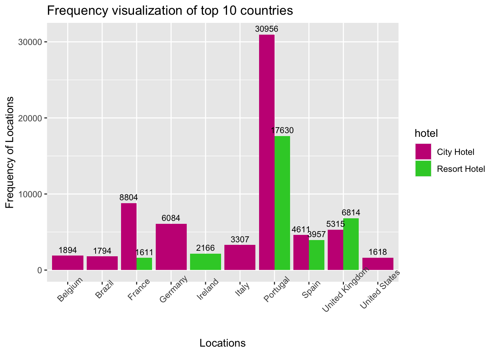
Fig analysis: This visualization answers the question of from what location are most of customers coming from? There are around 178 countries where visitors are located, out of those a bar graph has been plotted for the top 10 countries. We can see that most of the customers are from Portugal country of 48590 i,e 30956 booked in city hotel and 17630 in Resort hotel. Rest of the visitors mostly belong to the europian countries.
From which country to majority of the customers belong to?
#Mutation
CountLocation <- dataset %>%
summarise(Portugal = nrow(dataset[dataset$country == 'PRT',]),
Other_countries = nrow(dataset[dataset$country != 'PRT',])) %>%
pivot_longer(cols = everything(),names_to = "country", values_to = "count") %>%
mutate(count = (count/sum(count))*100,
lcount = cumsum(count) - 0.5 * (count))
#Plotting
ggplot(CountLocation, aes(x="", y=count, fill=country)) +
geom_bar(stat="identity", width=1) +
geom_text(aes(y=lcount, label = round(count,2)), color = "white") +
coord_polar("y", start=0) +
ggtitle("Number of bookings by country of origin") +
theme_void()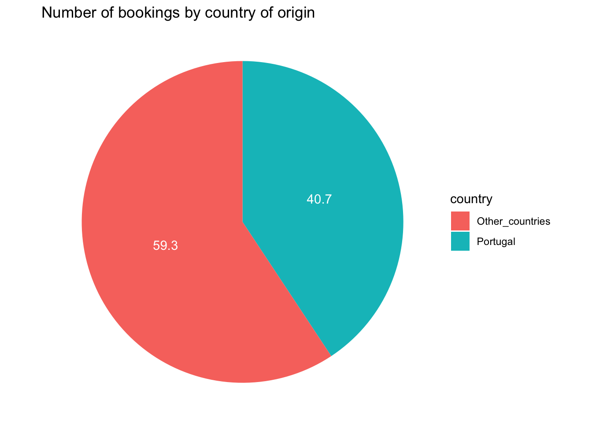
Fig Analysis: As city hotel and resort hotel are based out of Portugal and have a major share of visitors coming from that country, the above visualization is to plot the bookings made by portugal visitors to that of visitors from all other countries. Portugal alone takes 40.7% of the bookings whereas all other countries take 59.3%.
what is the revenue earned from customer belonging to various locations?
#Mutation
Portugal <- dataset[dataset$country == "PRT",]
Other <- dataset[dataset$country != "PRT",]
CountLocationAdr <- data.frame(Portugal = mean(Portugal$adr),
Other = mean(Other$adr)) %>%
pivot_longer(cols = everything(),names_to = "country", values_to = "mean_adr") %>%
mutate(mean_adr = (mean_adr/sum(mean_adr))*100,
lcount = cumsum(mean_adr) - 0.5 * (mean_adr))
#Plotting
ggplot(CountLocationAdr, aes(x="", y=mean_adr, fill=country)) +
geom_bar(stat="identity", width=1) +
geom_text(aes(y=lcount, label = round(mean_adr,2)), color = "white") +
coord_polar("y", start=0) +
scale_fill_manual(values = c("purple","violet")) +
ggtitle("Average Daily wage by country of origin") +
theme_void()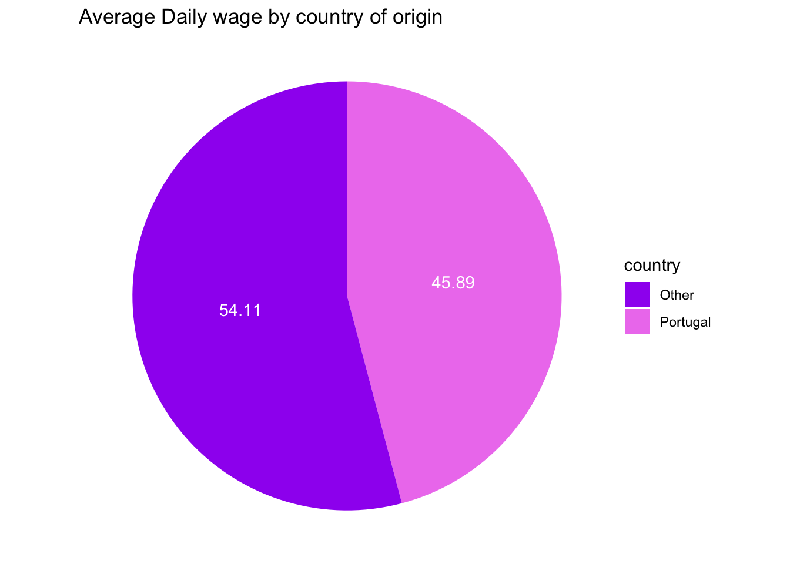
Fig Analysis: This pie chart shows the average daily rate earned from the reservation made by visitors in both the hotel combined from portugal and other countries. Around 45.89% of total average daily rate comes from Portugal based visitors alone.
From the above visualizations, we can see that most of the bookings are made by the visitors from Portugal and daily rate is also from them.
This analysis part will help get a detailed study on what is causing the cancellations and how to avoid them. Comparison of cancellations vs non-cancellations for various data columns has been analysed here.
What is the total cancellation percentage?
#Mutation
CancelStats<- data.frame(not_cancel = nrow(dataset[dataset$is_canceled == 0,]),
cancel = nrow(dataset[dataset$is_canceled == 1,])) %>%
pivot_longer(cols = everything(),names_to = "status", values_to = "count") %>%
mutate(count = (count/sum(count))*100,
lcount = cumsum(count) - 0.5 * (count))
#Plotting
ggplot(CancelStats, aes(x="", y=count, fill=status)) +
geom_bar(stat="identity", width=1) +
geom_text(aes(y=lcount, label = round(count,2)), color = "white") +
coord_polar("y") +
scale_fill_manual(values = c("plum","slategrey")) +
ggtitle("Cancellations and non-cancellations") +
theme_void()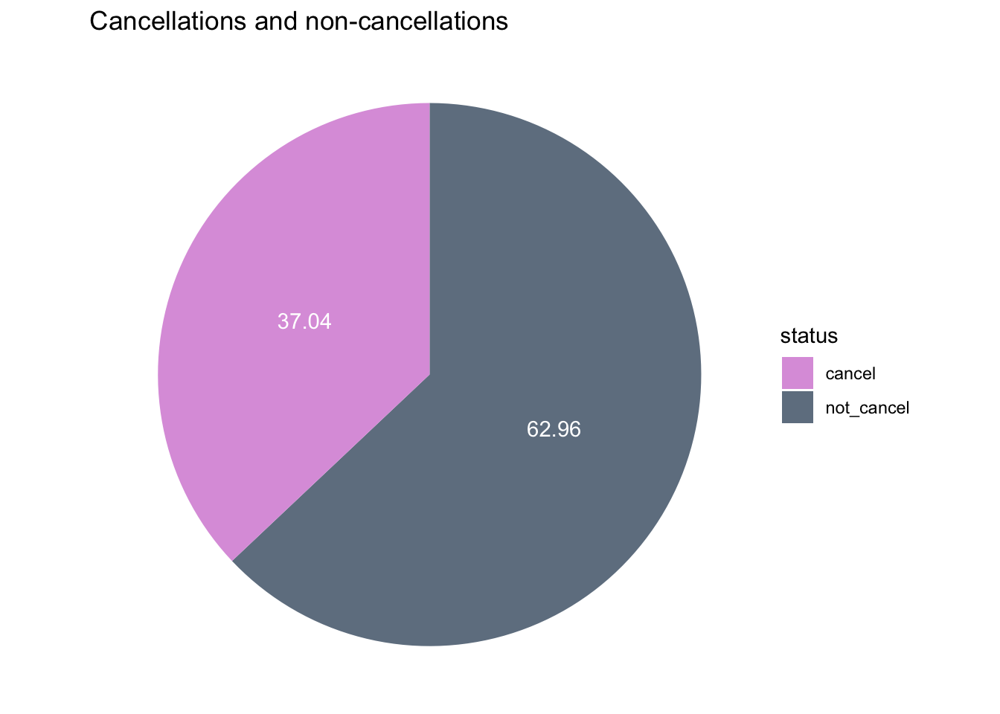
Fig analysis: This is the basic analysis of cancelled vs non-cancelled bookings made in the city and resort hotel combined. We can see that 37% of the bookings made have been cancelled, which is slightly large percentage. In the upcoming visualizations we see what other factors are effecting.
Cancellations in various hotels?
#Mutating
Cancel <- tidy_data %>%
group_by(hotel, is_canceled) %>%
count() %>%
mutate(is_canceled = as.character(is_canceled),
is_canceled = recode(is_canceled,
"1" = "cancelled",
"0" = "not_cancelled"))
#Plotting
ggplot(Cancel,aes(x = hotel, y = n, fill = is_canceled )) +
geom_bar(stat = "identity", position = "dodge") + #to get the bar graph
geom_text( aes(label = signif(n)), position = position_dodge(.9), size = 3, vjust = -0.5) +
scale_fill_manual(values = c("orange","olivedrab")) +
labs(x = "Hotels",
y = "Bookings",
title = "Cancellations vs Non_cancellations in various hotels") #to get the labels of axis and title of the graph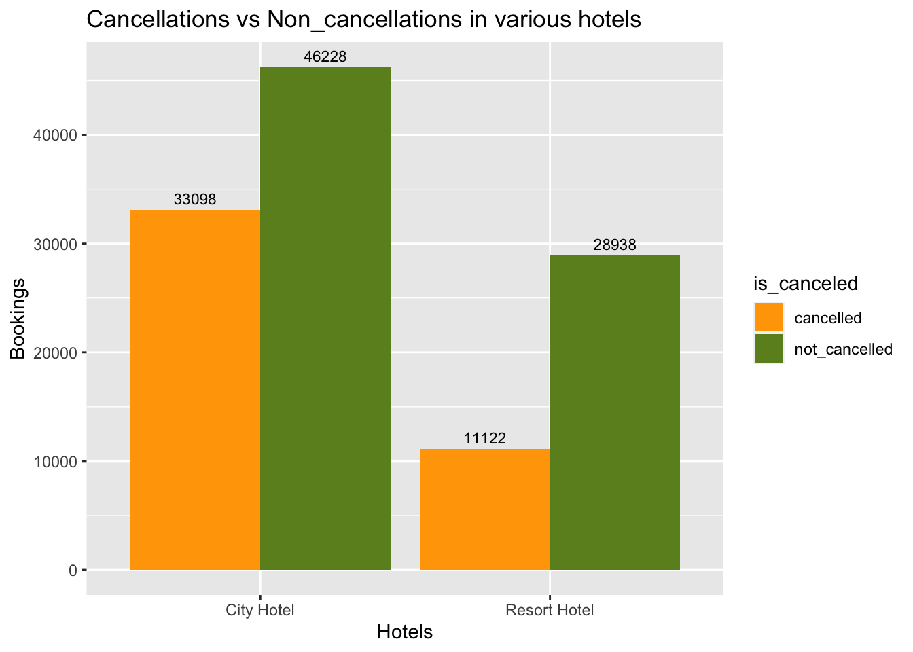
Fig analysis: The cancellations made in city hotels are relatively high that the cancellations made in resort hotel. There are about 33098(41% of city hotel bookings) cancellations in city hotel, whereas there are 11122 (27.7% of resort hotel bookings) cancellations in resort hotel.
Cancellations in various year?
#Mutating
Cancel_month <- tidy_data %>%
mutate(arrival_date_year = as.character(year(arrival_date))) %>%
group_by(hotel, is_canceled, arrival_date_year) %>%
count() %>%
mutate(is_canceled = as.character(is_canceled),
is_canceled = recode(is_canceled,
"1" = "cancelled",
"0" = "not_cancelled"))
#Plotting
ggplot(Cancel_month, aes(x = arrival_date_year, y = n, fill = is_canceled)) + #plot the x-axis and y-axis
geom_bar(stat = "identity", position = "dodge") + #to get the bar graph
geom_text( aes(label = signif(n)), position = position_dodge(.9), size = 3, vjust = -0.5) +
facet_wrap(vars(hotel)) +
scale_fill_manual(values = c("slateblue","orchid")) +
labs(x = "Year",
y = "Count",
title = "Cancellations vs Non_cancellations in various hotels by years") #to get the labels of axis and title of the graph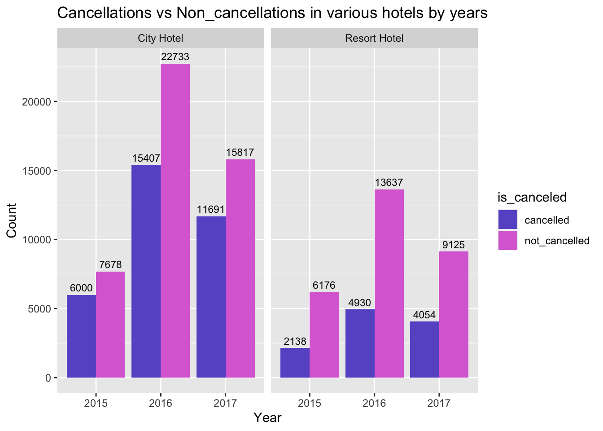
Fig analysis: In city resort, cancellations are observed to be more in the year 2016. However, the total number of bookings made in 2016 are more, but in 2015 the number of cancellations has higher percentage relatively.
In resort hotel, there were more cancellations made in 2016 but has lower relative percentage. Whereas in 2017, even though there were lesser number of cancellations compared to 2016, the realtive percentage of 2017 is high.
Cancellations in various months?
CountCancellations <- tidy_data %>%
mutate( arrival_date_month = month.name[month(arrival_date)],
arrival_date_month = factor(arrival_date_month, levels = month.name),
is_canceled = as.character(is_canceled),
is_canceled = recode(is_canceled,
"1" = "cancelled",
"0" = "not_cancelled")) %>%
group_by(hotel, is_canceled, arrival_date_month) %>%
count(is_canceled)
#Plotting
ggplotly(ggplot(CountCancellations,aes(x=arrival_date_month, y = n, col = is_canceled, group = 1)) +
geom_line() +
geom_point() +
facet_wrap(vars(hotel)) +
labs(title="Cancellations vs Non_cancellations in various hotels by months",
y="Number of bookings") + # title and caption # change to monthly ticks and labels
theme(axis.text.x=element_text(angle=45)))Fig analysis: The cancellations in the month of August are high in both city and resort hotels. Additionally, in city resort even during may there have been many cancellations. However, number of bookings are also high in these months. Therefore we can say that months May to October are busisest season of the year
Effect of deposit type on cancellations?
DepositsCancellations <- tidy_data %>%
mutate( is_canceled = as.character(is_canceled),
is_canceled = recode(is_canceled,
"1" = "cancelled",
"0" = "not_cancelled")) %>%
group_by(deposit_type, is_canceled) %>%
count(deposit_type, is_canceled)
#Plotting
ggplot(DepositsCancellations,aes(x=deposit_type, y = n, fill = is_canceled)) +
geom_bar(stat = "identity", position = "dodge") + #to get the bar graph
geom_text( aes(label = signif(n)), position = position_dodge(.9), size = 3, vjust = -0.5) +
scale_fill_manual(values = c("cadetblue","goldenrod")) +
labs(title="Cancellations vs Non_cancellations by deposit_type",
y="Number of bookings") # title and caption # change to monthly ticks and labels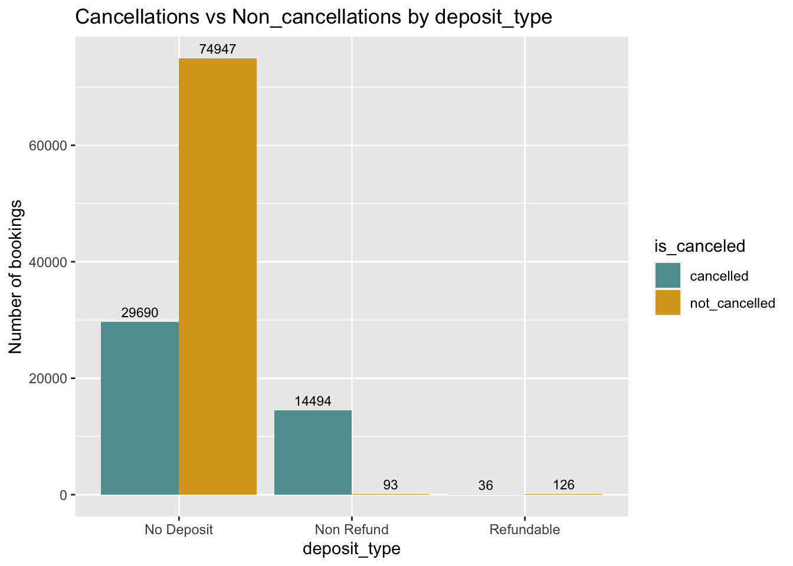
Fig analysis: Majority of bookings are made through ‘No deposit’ deposit type, hence the number of cancellations are also more comparatively. Surprisingly when the type is ‘Non Refund’, there are many cancellations. The relative cancellation weightage in ‘refundable’ is also more, as there is refund comes no surprise.
Effect of market segment on cancellations?
MarketCancellations <- tidy_data %>%
mutate( is_canceled = as.character(is_canceled),
is_canceled = recode(is_canceled,
"1" = "cancelled",
"0" = "not_cancelled")) %>%
group_by(market_segment, is_canceled) %>%
count(market_segment, is_canceled)
#Plotting
ggplot(MarketCancellations,aes(x=market_segment, y = n, fill = is_canceled)) +
geom_bar(stat = "identity", position = "dodge") + #to get the bar graph
geom_text( aes(label = signif(n)), position = position_dodge(.9), size = 3, vjust = -0.5) +
scale_fill_manual(values = c("deeppink","forestgreen")) +
labs(title="Cancellations vs Non_cancellations by market segment",
y="Number of bookings") + # title and caption # change to monthly ticks and labels
theme(axis.text.x=element_text(angle=45))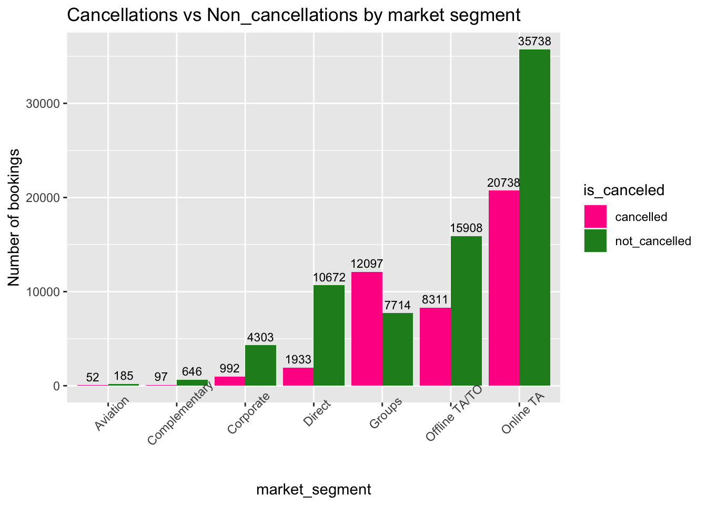
Fig analysis: In Groups market, there is a high cancellation rate observed than not_cancelled bookings. However majority of the cancellations have been made by Online TA market as there are more bookings.
Effect of lead time on cancellations?
CustomerCancellations <- tidy_data %>%
mutate( is_canceled = as.character(is_canceled),
is_canceled = recode(is_canceled,
"1" = "cancelled",
"0" = "not_cancelled")) %>%
group_by(lead_time, is_canceled) %>%
count(lead_time, is_canceled) %>%
filter(is_canceled =='not_cancelled')
#Plotting
ggplot(CustomerCancellations,aes(x=lead_time, y = n)) +
geom_line() +
geom_point() +
labs(title="Cancellations by lead time",
y="Cancellations") # title and caption # change to monthly ticks and labels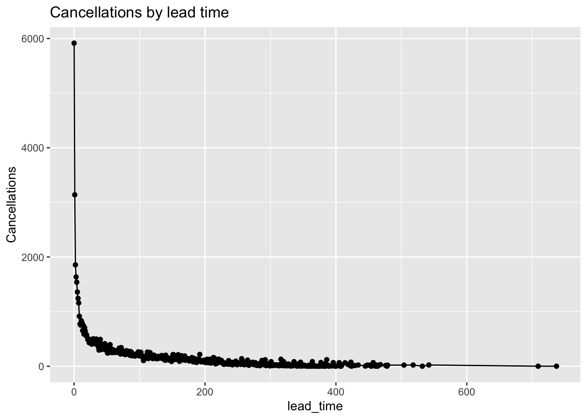
Fig analysis: As the lead_time increases i.e when the customers book their stays well in advance the chance of them cancelling the stay is decreasing. When the lead_time is less i.e close to 0, the cancellation chances are more.
Effect of special requests on cancellations?
RequestCancellations <- tidy_data %>%
mutate( is_canceled = as.character(is_canceled),
is_canceled = recode(is_canceled,
"1" = "cancelled",
"0" = "not_cancelled")) %>%
group_by(total_of_special_requests, is_canceled) %>%
count(total_of_special_requests, is_canceled)
#Plotting
ggplot(RequestCancellations,aes(x=total_of_special_requests, y = n, fill = is_canceled)) +
geom_bar(stat = "identity", position = "dodge" ) + #to get the bar graph
geom_text( aes(label = signif(n)), position = position_dodge(.9), size = 3, vjust = -0.5) +
scale_fill_manual(values = c("black","red")) +
labs(title="Cancellations vs Non_cancellations by total_of_special_requests",
y="Number of bookings") # title and caption # change to monthly ticks and labels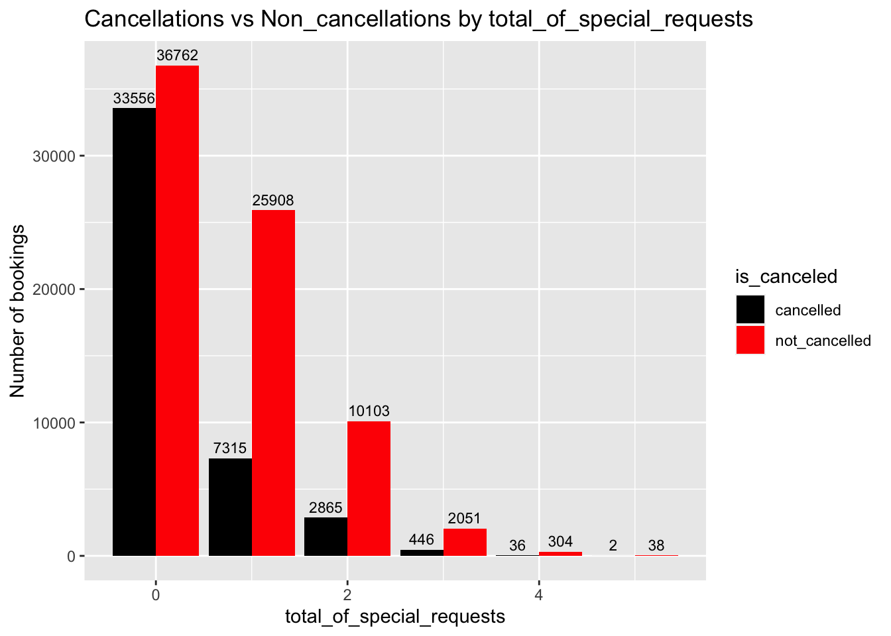
Fig analysis: When there are more special requests made by the customers, it is observed that the cancellations made by them are also less so the hotel would have met their needs. But when there are no requests made by the customers, there is a large cancellation percentage observed.
Effect of car parking space on cancellations?
ReservationCancellations <- tidy_data %>%
mutate( is_canceled = as.character(is_canceled),
is_canceled = recode(is_canceled,
"1" = "cancelled",
"0" = "not_cancelled")) %>%
group_by(required_car_parking_spaces, is_canceled) %>%
count(required_car_parking_spaces, is_canceled)
#Plotting
ggplot(ReservationCancellations,aes(x=required_car_parking_spaces, y = n, fill = is_canceled)) +
geom_bar(stat = "identity", position = "dodge") + #to get the bar graph
geom_text( aes(label = signif(n)), position = position_dodge(.9), size = 3, vjust = -0.5) +
scale_fill_manual(values = c("brown3","chocolate2")) +
labs(title="Cancellations vs Non_cancellations by parking space",
y="Number of bookings") # title and caption # change to monthly ticks and labels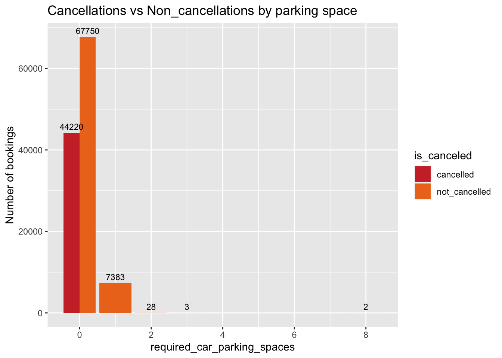
Fig analysis: When there are no car parking spaces required by the customers, the chances of cancellations are really high. But when customers need parking, they tend not to cancel their reservations. May be this is because these hotels have car parking spaces which are not really provided by all the hotels in the location
Effect of repeated guests on cancellations?
RepeatedCancellations <- tidy_data %>%
mutate( is_repeated_guest = as.character(is_repeated_guest),
is_repeated_guest = recode(is_repeated_guest,
"0" = "not repeated",
"1" = "repeated"),
is_canceled = as.character(is_canceled),
is_canceled = recode(is_canceled,
"1" = "cancelled",
"0" = "not_cancelled")) %>%
group_by(is_repeated_guest, is_canceled) %>%
count(is_repeated_guest, is_canceled)
#Plotting
ggplot(RepeatedCancellations,aes(x=is_repeated_guest, y = n, fill = is_canceled)) +
geom_bar(stat = "identity", position = "dodge") + #to get the bar graph
geom_text( aes(label = signif(n)), position = position_dodge(.9), size = 3, vjust = -0.5) +
scale_fill_manual(values = c("slateblue","paleturquoise")) +
labs(title="Cancellations vs Non_cancellations by repeated guest",
y="Number of bookings") # title and caption # change to monthly ticks and labels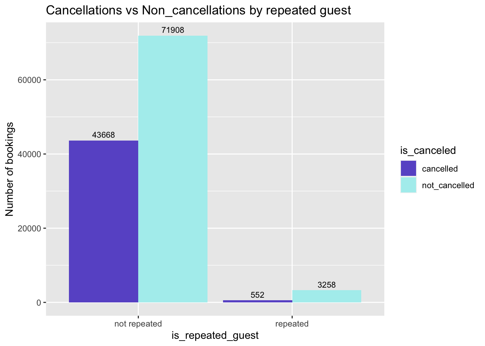
Fig analysis: Even though repeated guests are rare, there cancellation rate is relatively higher. Non repeated guests have higher count of cancellations.
Effect of meal type on cancellations?
MealCancellations <- tidy_data %>%
mutate( is_canceled = as.character(is_canceled),
is_canceled = recode(is_canceled,
"1" = "cancelled",
"0" = "not_cancelled")) %>%
group_by(meal, is_canceled) %>%
count(meal, is_canceled)
#Plotting
ggplot(MealCancellations,aes(x=meal, y = n, fill = is_canceled)) +
geom_bar(stat = "identity", position = "dodge") + #to get the bar graph
geom_text( aes(label = signif(n)), position = position_dodge(.9), size = 3, vjust = -0.5) +
scale_fill_manual(values = c("slateblue","paleturquoise")) +
labs(title="Cancellations vs Non_cancellations by meal",
y="Number of bookings") # title and caption # change to monthly ticks and labels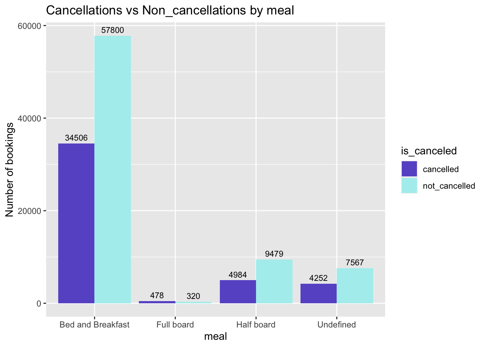
Fig analysis: It can be observed that most of the cancellations have been made by the vistors who chose “Bed and Breakfast” meal type as it has high booking rate though.
From all the above visualizations it has been observed that cancellations rate mainly depends on lead_time, total_of_special_requests, required car parking space, is_repeated_guest, deposit_type.
what is the price of different room types?
#Mutation
room_price <- tidy_data %>%
select(hotel, assigned_room_type, adr)
#Plotting
ggplot(room_price, aes(x = assigned_room_type, y = adr, fill = hotel)) +
geom_boxplot() +
#facet_wrap(vars(hotel)) +
ylim(0,550) +
labs(x = "Room type",
y = "Price",
title = "Price by Room types") #to get the labels of axis and title of the graph)Warning: Removed 2 rows containing non-finite values (`stat_boxplot()`).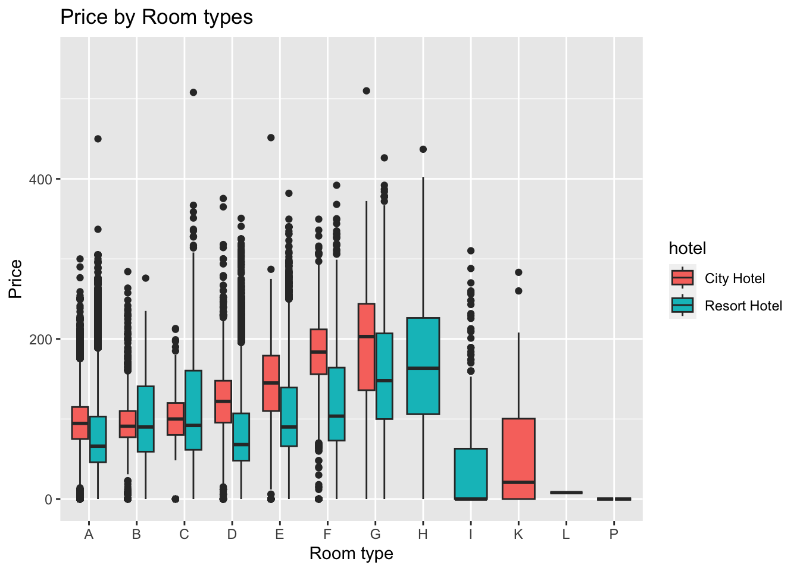
Fig analysis: From the above visualization we can see the prices of various room types in city hotel and resort hotel. The boxplot shows the median, max and min price for each room type along with some outliers.
What is the price of rooms during different months?
#Mutation
price_month <- tidy_data %>%
select(arrival_date, adr, hotel) %>%
mutate(arrival_date = month.name[month(arrival_date)],
arrival_date = factor(arrival_date, levels = month.name)) %>%
group_by(hotel, arrival_date) %>%
summarise(adr = mean(adr))`summarise()` has grouped output by 'hotel'. You can override using the
`.groups` argument.#Plotting
ggplotly(ggplot(price_month, aes(x = arrival_date, y = adr, col = hotel, group = 1)) +
geom_line() +
geom_point() +
labs(x = "arrival month",
y = "price",
title = "Price of rooms by arrival month") +
theme(axis.text.x=element_text(angle=45)))Fig analysis: The prices of the rooms in the hotels are highest during the months of July-August in resort hotel, whereas maximum in city hotel during May-June months. However the price of the rooms are costlier in july and august in resort hotel than in city hotel, in all other months resort hotel recorded less price.
stay <- tidy_data %>%
group_by(days_of_stay, hotel) %>%
count()
ggplot(stay, aes(x = days_of_stay, y = n, col = hotel)) +
# geom_bar(stat = "identity", position = "dodge") +
# theme(text = element_text(size = 9),element_line(size =1))
geom_line() +
geom_point()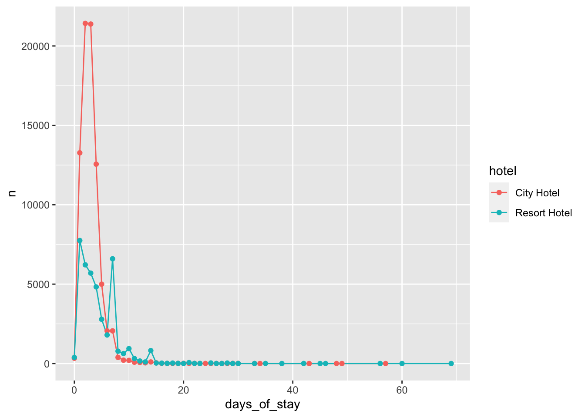
city_stay <- stay %>%
filter(hotel == "City Hotel")
city_mean <- weighted.mean(city_stay$days_of_stay, city_stay$n)
city_max <- max(city_stay$days_of_stay)
city_min <- min(city_stay$days_of_stay)
print(paste("Average stay of visitors at City hotel is ", city_mean))[1] "Average stay of visitors at City hotel is 2.97814083654792"print(paste("Minimum stay of visitors at City hotel is ", city_min))[1] "Minimum stay of visitors at City hotel is 0"print(paste("Maximum stay of visitors at City hotel is ", city_max))[1] "Maximum stay of visitors at City hotel is 57"resort_stay <- stay %>%
filter(hotel == "Resort Hotel")
resort_mean <- weighted.mean(resort_stay$days_of_stay, resort_stay$n)
resort_max <- max(resort_stay$days_of_stay)
resort_min <- min(resort_stay$days_of_stay)
print(paste("Average stay of visitors at Resort hotel is ", resort_mean))[1] "Average stay of visitors at Resort hotel is 4.31854717923115"print(paste("Minimum stay of visitors at Resort hotel is ", resort_min))[1] "Minimum stay of visitors at Resort hotel is 0"print(paste("Maximum stay of visitors at Resort hotel is ", resort_max))[1] "Maximum stay of visitors at Resort hotel is 69"Fig analysis: According to the visualization visitors mostly stay for 1-4 nights in city hotel and 1-7 nights in Resort hotel.
CountMeals <- tidy_data %>%
mutate(month=floor_date(arrival_date,unit="month")) %>%
group_by(hotel, meal, month) %>%
count(hotel,meal)
ggplot(CountMeals, aes(x = month, y = n, col = meal)) + #plot the x-axis and y-axis
geom_line() +
facet_wrap(vars(hotel)) +
labs(x = "Hotels",
y = "Count",
title = "Meal Preference by hotel") #to get the labels of axis and title of the graph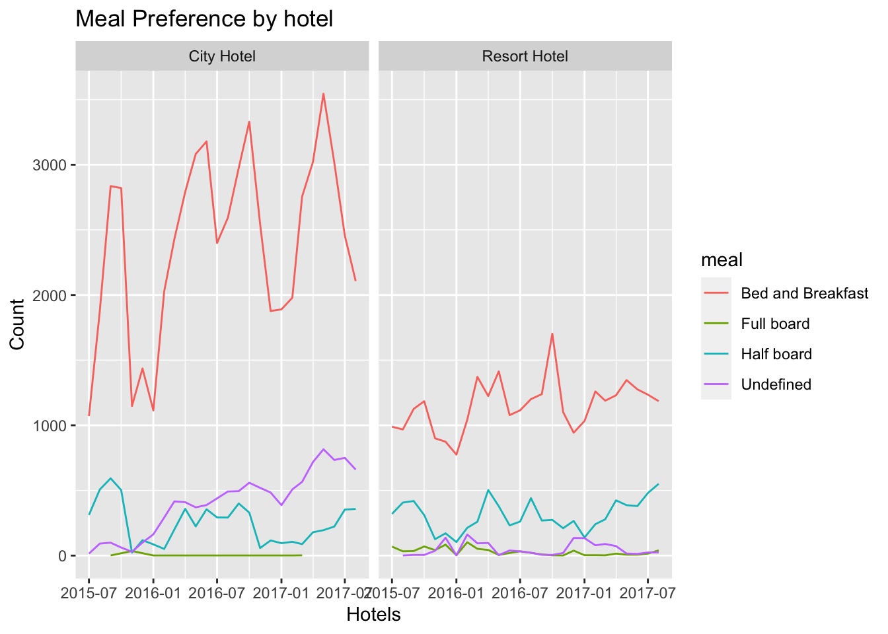
Fig analysis: From the above visualization we can see that, both in city hotel and resort hotel, most of the people prefer Bed and Breakfast over rest of the available meal types. It can also be seen that over the years, even though there were fluctuations, there seems to be increase in the count of bed and breakfast kind of meals.Full board meal is almost not chosen by the visitors. With this analysis, the hotels can be well prepared for serving the customers for Bed and Breakfast.
With all the above analysis of data, we can say that most of the bookings are made in city hotel, so the the focus of the management must be in this hotel. Months May to august seem to attract more visitors and hence generating more income. There are many visitors from Europian countries, by inculcating few europian cuisines they can make the visitors feel more comfortable. By increasing the marketing stratergy in europe, the hotels can increase their bookings. When there is no deposit type, the cancellations seems to be higher, with some amount of down payment this should most probably reduce. Management should also focus on asking the customers for any special requests, as it is clear that customers with more requests don’t tend to cancel their reservation. Breakfasts must be cooked abundantly as most of the customers tend to have their breakfast during their stay. Their are not many repeated guests, which has to be addressed by the management. Some kind of offers must be provided to the customers to attract them to come back to stay in the hotels. With this analysis, if the managements takes few more steps the cancellation rate would go does increasing their customer base and income.
With this project I’ve learned how important exploratory data analysis is. While working with this dataset, it took me some time to analyse what each and every column represents, referred to kaggle for better understanding of the dataset. Once I understood what each column consists I moved on to cleaning the data. Although there wasn’t much to tidy, I cleaned the dataset for better understanding of the readers. There were many potential research questions in my mind, by keeping in mind how a hotel owner would like to see his visualizations I came up with a bunch of question most relevant to the topic. As this is my first project in r, I faced some unknown errors initially, but with the help of google and some self analysis, I managed to pull it off.
I’m extremely thankful to my professor Sean Conway for this support throughout the course, his feedback on the challenges and homeworks helped me think a little bit more and get along with the project